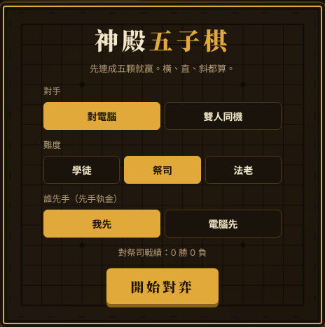
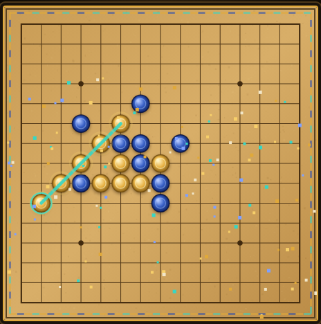

神殿五子棋
埃及風五子連珠 可對電腦或雙人同機，電腦、手機都能玩

遊戲簡介
五子棋是兩人輪流下子的遊戲。誰先在橫、直、斜任一方向連成五顆，誰就贏。規則簡單，但要看得遠：你在進攻的同時，也要盯著對手的連線。
《神殿五子棋》用 15×15 的棋盤，棋子是太陽金與青金石。你可以挑戰電腦，也可以和朋友在同一台手機或電腦上輪流下。不用安裝，打開網頁就能玩。
規則
- 棋盤：15×15，共 225 個交叉點，棋子下在交叉點上。
- 先手：執金色的人先下，之後輪流，每次下一顆，下了不能移動。
- 獲勝：橫、直、斜任一方向連成五顆或更多，就贏。六顆、七顆也算贏，沒有禁手。
- 和棋：棋盤下滿、沒有人連成五顆，就是和棋。
操作方式
| 動作 | 電腦 | 手機 |
|---|---|---|
| 落子 | 滑鼠移到交叉點會出現半透明預覽，點一下落子 | 點一下出現預覽，再點同一格才落子。點別格會改預覽位置 |
| 悔棋 | 按「悔棋」。對電腦時一次收回你和電腦各一手，雙人時收回一手 | |
| 提示 | 按「提示」，電腦用最強的算法在棋盤上標出一個建議位置（虛線圈） | |
| 認輸、新局 | 按「認輸」或「新局」。新局會回到設定畫面，可以換難度、換先手 | |
| 音效 | 右上角「音效」鈕可以開關 | |
遊戲畫面示範


三種難度
| 難度 | 電腦的下法 | 適合誰 |
|---|---|---|
| 學徒 | 會擋對手快連成五的子，也會自己進攻，但偶爾下得隨意。 | 剛學規則、想先熟悉的人 |
| 祭司 | 會往後看兩步，懂得擋住對手的活三，也會自己做出連線。 | 下過幾盤、想練習的人 |
| 法老 | 會一路往後推算，最深六步，一發現對手的威脅就擋，也會主動做出雙重威脅。 | 想認真挑戰的人 |
先手有優勢，所以挑戰高難度時，可以先選「我先」。連續輸給電腦的話，先降一級，再慢慢往上挑戰。戰績會依難度分開記在你的瀏覽器裡。
新手小技巧
下面先說兩個名詞。活三是三顆連在一起、兩端都還空著，再下一顆就成「活四」。活四是四顆連在一起、兩端都空著，對手只能擋一邊，你就贏了。
- 開局靠近中央。中央連線的方向多，比邊角容易發展。
- 看到對手的活三，就要擋。等它變成活四，就來不及了。
- 一手同時做出兩條威脅，是常見的贏法。例如一手同時造出活三和四，對手只能擋一邊。
- 擋也要順便進攻。選擇既能擋住對手、又能連上自己棋子的位置。
- 邊緣和角落少用。靠近邊界的線容易被擋死，連不成五。
常見問題
Q：有禁手嗎？
沒有。這是自由規則，先連成五顆或更多就贏。
Q：手機點歪了怎麼辦？
手機要點兩次：第一次只是預覽，第二次點同一格才落子。預覽時點別格就會換位置。
Q：戰績會不見嗎？
戰績和設定存在這台裝置的瀏覽器裡。換裝置、換瀏覽器，或清除瀏覽器資料，紀錄就會消失。
Q：可以和朋友在線上對戰嗎？
目前只有同一台裝置輪流下，沒有線上對戰。